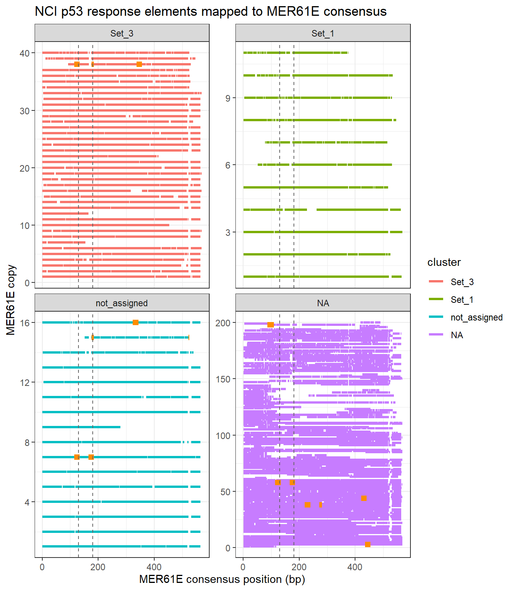
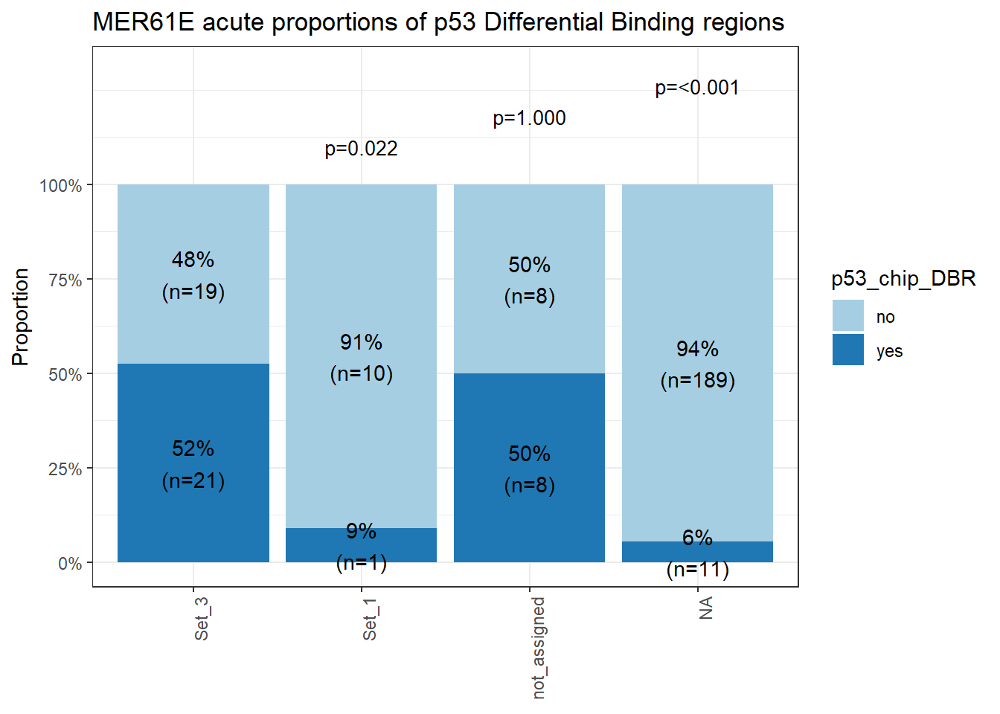
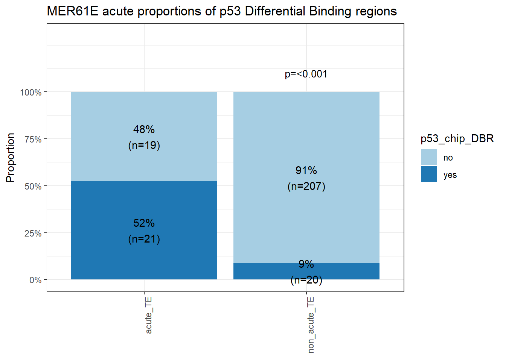
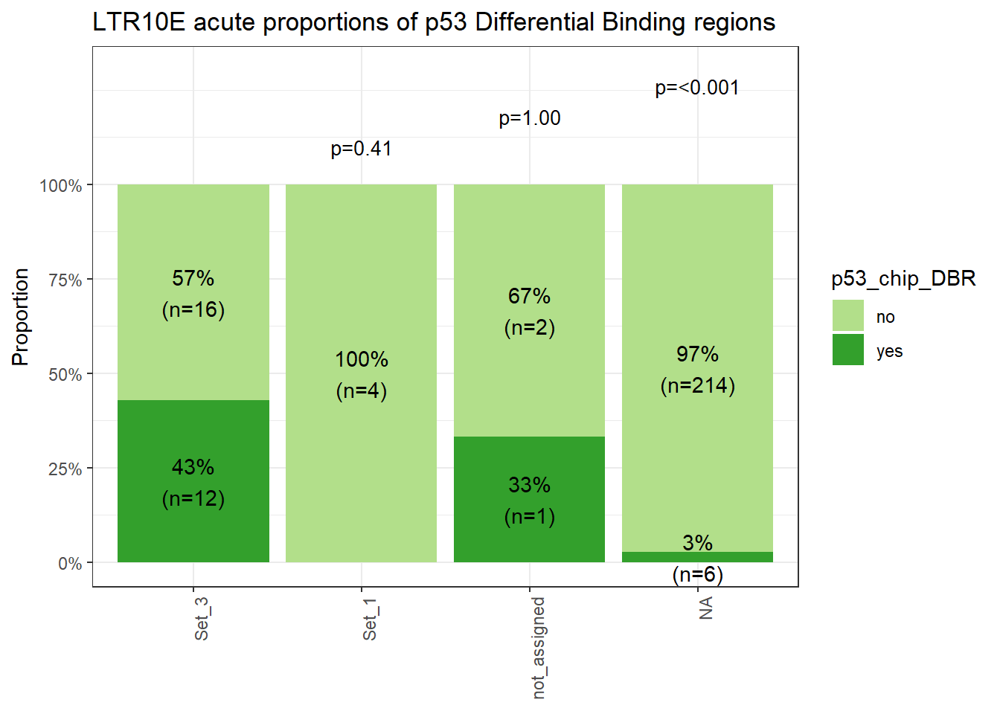
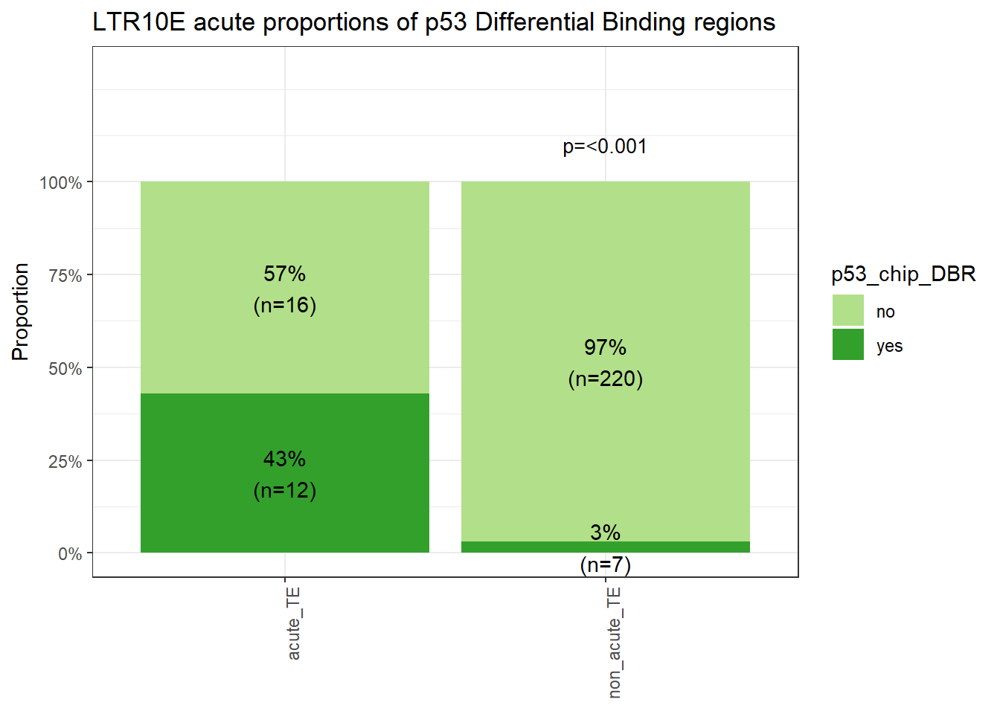

MER61E_build_4
Renee Matthews
2026-11-11
Last updated: 2026-11-11
Checks: 7 0
Knit directory: DXR_continue/
This reproducible R Markdown analysis was created with workflowr (version 1.7.2). The Checks tab describes the reproducibility checks that were applied when the results were created. The Past versions tab lists the development history.
Great! Since the R Markdown file has been committed to the Git repository, you know the exact version of the code that produced these results.
Great job! The global environment was empty. Objects defined in the global environment can affect the analysis in your R Markdown file in unknown ways. For reproduciblity it’s best to always run the code in an empty environment.
The command set.seed(20250701) was run prior to running
the code in the R Markdown file. Setting a seed ensures that any results
that rely on randomness, e.g. subsampling or permutations, are
reproducible.
Great job! Recording the operating system, R version, and package versions is critical for reproducibility.
Nice! There were no cached chunks for this analysis, so you can be confident that you successfully produced the results during this run.
Great job! Using relative paths to the files within your workflowr project makes it easier to run your code on other machines.
Great! You are using Git for version control. Tracking code development and connecting the code version to the results is critical for reproducibility.
The results in this page were generated with repository version 44f1ba1. See the Past versions tab to see a history of the changes made to the R Markdown and HTML files.
Note that you need to be careful to ensure that all relevant files for
the analysis have been committed to Git prior to generating the results
(you can use wflow_publish or
wflow_git_commit). workflowr only checks the R Markdown
file, but you know if there are other scripts or data files that it
depends on. Below is the status of the Git repository when the results
were generated:
Ignored files:
Ignored: .Rhistory
Ignored: .Rproj.user/
Ignored: data/Bed_exports/
Ignored: data/Bed_exportsH3K27ac_summit_gr_ext200.bed
Ignored: data/Cormotif_data/
Ignored: data/DER_data/
Ignored: data/H3K27ac_LTR10E_integrant_anno.RDS
Ignored: data/H3K27ac_MER61E_integrant_anno.RDS
Ignored: data/MER61E_alignments.RDS
Ignored: data/MER61intermediatemarking_protein.RDS
Ignored: data/Other_paper_data/
Ignored: data/RDS_files/
Ignored: data/TE_annotation/
Ignored: data/alignment_summary.txt
Ignored: data/all_peak_final_dataframe.txt
Ignored: data/cell_line_info_.tsv
Ignored: data/full_p53_canonical.RDS
Ignored: data/full_summary_QC_metrics.txt
Ignored: data/hg19ToHg38.over.chain
Ignored: data/hg19ToHg38.over.chain.gz
Ignored: data/hg38_expressed_RNA_genes.bed
Ignored: data/lookup_table_andstuff.txt
Ignored: data/motif_lists/
Ignored: data/number_frag_peaks_summary.txt
Ignored: data/p53halfsite_TE_ids.RDS
Untracked files:
Untracked: H3K27ac_all_regions_test.bed
Untracked: H3K27ac_consensus_clusters_test.bed
Untracked: MER61C_ERV1_LTR.fa
Untracked: MER61E_notSet3.bed
Untracked: analysis/GREAT_H3K27ac.Rmd
Untracked: analysis/H3K27ac_ChromHMM_FC.Rmd
Untracked: analysis/H3K27ac_KZFP_motifs.Rmd
Untracked: analysis/H3K27ac_TE_investigation_200bp.Rmd
Untracked: analysis/H3K27me3_TE_investigation.Rmd
Untracked: analysis/H3K36me3_TE_investigation.Rmd
Untracked: analysis/HIstone_supp_profiles.Rmd
Untracked: analysis/Top2a_Top2b_expression.Rmd
Untracked: analysis/drill_down_KZFPs.Rmd
Untracked: analysis/maps_and_plots.Rmd
Untracked: analysis/proteomics.Rmd
Untracked: code/For_john.R
Untracked: code/RNA_gene_locations.R
Untracked: code/SOX11_excel_to_granges_coversion.R
Untracked: code/State_color_code_igv.R
Untracked: code/score_phylop.py
Untracked: hg19ToHg38.over.chain.gz
Untracked: hg38_TSS_1bp.bed
Untracked: other_analysis/
Unstaged changes:
Modified: analysis/Goanalysis_TFs.Rmd
Modified: analysis/H3K27_TE_overlap_extend.Rmd
Modified: analysis/H3K27ac_TEtype.Rmd
Modified: analysis/H3K27ac_cisRE.Rmd
Modified: analysis/LTR10E_build.Rmd
Modified: analysis/MER61E_build.Rmd
Modified: analysis/Main_fig2.Rmd
Modified: analysis/computeMatrixplots.Rmd
Modified: analysis/distance_exam.Rmd
Modified: analysis/repeatmasker_data.Rmd
Modified: analysis/supp_fig.Rmd
Modified: code/corMotifcustom.R
Note that any generated files, e.g. HTML, png, CSS, etc., are not included in this status report because it is ok for generated content to have uncommitted changes.
These are the previous versions of the repository in which changes were
made to the R Markdown (analysis/MER61E_build_4.Rmd) and
HTML (docs/MER61E_build_4.html) files. If you’ve configured
a remote Git repository (see ?wflow_git_remote), click on
the hyperlinks in the table below to view the files as they were in that
past version.
| File | Version | Author | Date | Message |
|---|---|---|---|---|
| Rmd | 44f1ba1 | reneeisnowhere | 2026-11-11 | wflow_publish("analysis/MER61E_build_4.Rmd") |
library(tidyverse)
library(GenomicRanges)
library(plyranges)
library(genomation)
library(readr)
library(rtracklayer)
library(stringr)
library(ggrepel)
library(DT)
library(ComplexHeatmap)
library(circlize)
# library(ggalluvial)
library(AnnotationDbi)
library(org.Hs.eg.db)
library(janitor)
library(MASS)
library(readxl)
# library(TxDb.Hsapiens.UCSC.hg38.knownGene)
library(GenomicFeatures)
library(edgeR)
library(Biostrings)
library(pwalign)
library(BSgenome.Hsapiens.UCSC.hg38)The purpose of this page is to build a large dataframe for MER61E annotations.
# ZNF680 narrowpeak binding Hek293 ENCFF935XZI
ZNF680_regions <- import("data/Other_paper_data/ZNF680_CHIP_ENCFF935XZI.bed",format = "narrowPeak")
ZNF780A_regions <- import("data/Other_paper_data/GSM2466657_lifted_hg38_peaks_ZNF780A.bed")
MER61E_regions <- import("data/Bed_exports/repeatmasker_sets/ERV1/MER61E_ERV1_LTR.bed")
LTR10E_regions <- import("data/Bed_exports/repeatmasker_sets/ERV1/LTR10E_ERV1_LTR.bed")
MER61E_p53_best_site_score <- import("C:/Users/renee/Other_projects_data/DXR_data/fimo_results/MER61E_ERV1_LTR_fimo/best_site.narrowPeak")
LTR10E_p53_best_site_score <- import("C:/Users/renee/Other_projects_data/DXR_data/fimo_results/LTR10E_ERV1_LTR_fimo/best_site.narrowPeak")
H3K27ac_summit_gr <- readRDS("data/RDS_files/H3K27ac_complete_summit_gr.RDS")
H3K27ac_summit_gr_ext <- GenomicRanges::resize(H3K27ac_summit_gr, width(H3K27ac_summit_gr)+400, fix = "center")
# export(H3K27ac_summit_gr_ext,"data/Bed_exports/H3K27ac_summit_gr_ext.bed")
# peakAnnoList_H3K27ac <- readRDS("data/motif_lists/H3K27ac_annotated_peaks.RDS")
#
# peakAnnoList_H3K9me3 <- readRDS("data/motif_lists/H3K9me3_annotated_peaks.RDS")
# H3K27ac_lookup <- imap_dfr(peakAnnoList_H3K27ac[1:3], ~
# tibble(Peakid = .x@anno$Peakid, cluster = .y))
##assigning Peakid as name of ext summit region
mcols(H3K27ac_summit_gr_ext)$name <- mcols(H3K27ac_summit_gr_ext)$Peakid
H3K27ac_ext200_anno <- readRDS("data/TE_annotation/annotated_H3K27ac_ext200_TE_overlaps.RDS")
# MER61E_anno_genes <- readRDS("data/RDS_files/MER61E_anno_genes.RDS")
# MER61E_anno_chipseeker <- readRDS("data/RDS_files/MER61E_anno_chipseeker.RDS")
# LTR10E_anno_genes <- readRDS("data/RDS_files/LTR10E_anno_genes.RDS")
# LTR10E_anno_chipseeker <- readRDS("data/RDS_files/LTR10E_anno_chipseeker.RDS")
# chipseeker_anno_MER61E <- MER61E_anno_chipseeker %>%
# as.data.frame() %>%
# dplyr::select(name,annotation,geneId,distanceToTSS) %>%
# dplyr::rename("repID"=name,"CS_MER61E_gene"=geneId,"CS_distanceToTSS"=distanceToTSS)
#
# chipseeker_anno_LTR10E <- LTR10E_anno_chipseeker %>%
# as.data.frame() %>%
# dplyr::select(name,annotation,geneId,distanceToTSS) %>%
# dplyr::rename("repID"=name,"CS_MER61E_gene"=geneId,"CS_distanceToTSS"=distanceToTSS)
# MER61E_intermediat_protein <- readRDS("data/MER61intermediatemarking_protein.RDS")
full_p53_canonical <- readRDS("data/full_p53_canonical.RDS")
p53halfsite_TE_ids <- readRDS("data/p53halfsite_TE_ids.RDS")
# LTR_df <- readRDS("data/RDS_files/LTR_DF_hg38.RDS")
# H3K27ac_toplist <- readRDS("data/DER_data/H3K27ac_toplist.RDS")
# H3K27ac_toptable_list <- bind_rows(H3K27ac_toplist, .id = "group")
# set_case_list_H3K27ac <- H3K27ac_toptable_list %>%
# dplyr::select(group,genes, logFC) %>%
# pivot_wider(.,id_cols = genes, names_from = group, values_from = logFC) %>%
# dplyr::left_join(H3K27ac_lookup,by =c("genes"="Peakid")) %>%
# mutate(cluster= case_when (is.na(cluster)~"not_assigned",
# TRUE ~ cluster),
# case= case_when(H3K27ac_24T > 0 & H3K27ac_24R >0 & H3K27ac_144R>0~"A",
# H3K27ac_24T < 0 & H3K27ac_24R <0 & H3K27ac_144R<0~"B",
# TRUE ~ "C"),
# alt_case= case_when(H3K27ac_24T > 0~"D",
# H3K27ac_24T < 0~"E",
# TRUE ~ "F")) %>%
# mutate(set_case=paste0(cluster,"_",case),
# set_alt_case=paste0(cluster,"_",alt_case)) %>%
# dplyr::select(genes, cluster,case,set_case,alt_case,set_alt_case)
# LTR10E_trajectory_broad <- readRDS("data/RDS_files/LTR10E_trajectory_broad.RDS")
# MER61E_trajectory_broad <- readRDS("data/RDS_files/MER61E_trajectory_broad.RDS")
# DOX_24_ATAC <- readRDS("data/Other_paper_data/Matthews_2025_DOX_24h_ATAC.RDS")
# DOX_24_DAR_gr <- DOX_24_ATAC %>%
# dplyr::filter(adj.P.Val<0.05) %>%
# dplyr::select(peak) %>%
# separate(peak, into = c("seqnames","start","stop"),remove = FALSE) %>%
# mutate(start=as.numeric(start),
# stop=as.numeric(stop)) %>%
# as_granges(seqnames = seqnames,
# start=start,
# end=stop,
# strand="*")
# upDOX_24_DAR_gr <- DOX_24_ATAC %>%
# dplyr::filter(adj.P.Val<0.05) %>%
# dplyr::filter(logFC>0) %>%
# dplyr::select(peak) %>%
# separate(peak, into = c("seqnames","start","stop"),remove = FALSE) %>%
# mutate(start=as.numeric(start),
# stop=as.numeric(stop)) %>%
# as_granges(seqnames = seqnames,
# start=start,
# end=stop,
# strand="*")
#
# DOX_24_CAR_gr <- DOX_24_ATAC %>%
# dplyr::filter(adj.P.Val>0.05) %>%
# dplyr::select(peak) %>%
# separate(peak, into = c("seqnames","start","stop"),remove = FALSE) %>%
# mutate(start=as.numeric(start),
# stop=as.numeric(stop)) %>%
# as_granges(seqnames = seqnames,
# start=start,
# end=stop,
# strand="*")
# mcols(DOX_24_CAR_gr)$name <- mcols(DOX_24_CAR_gr)$peak
#
# mcols(DOX_24_DAR_gr)$name <- mcols(DOX_24_DAR_gr)$peak
H3K27ac_summit_gr_ext <- keepStandardChromosomes(
H3K27ac_summit_gr_ext,
pruning.mode = "coarse")
# p53_sp_ChIP <- rtracklayer::import("C:/Users/renee/Other_projects_data/DOX_CHIP/macs3_out/MCW_SP_ChIP57_VEH_p53_Ind6/MCW_SP_ChIP57_VEH_p53_Ind6_q0.05_peaks.narrowPeak",format = "narrowPeak")
#
# CTCF_sp_ChIP <- rtracklayer::import("C:/Users/renee/Other_projects_data/DOX_CHIP/macs3_out/MCW_SP_ChIP63_VEH_CTCF_Ind1/MCW_SP_ChIP63_VEH_CTCF_Ind1_q0.05_peaks.narrowPeak",format = "narrowPeak")
#
# RAD21_sp_ChIP <- rtracklayer::import("C:/Users/renee/Other_projects_data/DOX_CHIP/macs3_out/MCW_SP_ChIP69_VEH_RAD21_Ind1/MCW_SP_ChIP69_VEH_RAD21_Ind1_q0.05_peaks.narrowPeak",format = "narrowPeak")
#
# TOP2B_sp_ChIP <- rtracklayer::import("data/Other_paper_data/ChIP3_TOP2B_CM_87-1.bed")
#
# ATAC_regions_Ind2 <- rtracklayer::import("C:/Users/renee/Other_projects_data/DXR_data/ATAC_peak_files/trimmed_Ind2_87V24h_S12_peaks.narrowPeak",format = "narrowPeak")
mint_anno <- readRDS("data/RDS_files/MER61E_intermediate_dataframe.RDS")
lint_anno <- readRDS("data/RDS_files/LTR10E_intermediate_dataframe.RDS")
#
# K27ac_VEH_Ind4 <- rtracklayer::import("data/peaks/H3K27ac/MCW_CT_ROA_106_FINAL_peaks.narrowPeak",format = "narrowPeak")
DBR_p53_results <- readRDS("C:/Users/renee/R_STUFF/DOX_ChIP_project/data/Omar_Revision/DE_results/efit2.RDS")
DBR_p53_gr <- readRDS("C:/Users/renee/R_STUFF/DOX_ChIP_project/data/Omar_Revision/DE_results/peakID_gr_p53DBR.RDS")
MER61E_site <- mergeByOverlaps(MER61E_regions,MER61E_p53_best_site_score)
MER61E_best_site_signal <- MER61E_site %>%
as.data.frame() %>%
dplyr::select(MER61E_regions.name,MER61E_p53_best_site_score.signalValue,MER61E_p53_best_site_score.qValue) %>%
dplyr::rename("repID"=1,"MER61E.signal"=2,"MER61E.qvalue"=3)
LTR10E_site <- mergeByOverlaps(LTR10E_regions,LTR10E_p53_best_site_score)
LTR10E_best_site_signal <- LTR10E_site %>%
as.data.frame() %>%
dplyr::select(LTR10E_regions.name,LTR10E_p53_best_site_score.signalValue,LTR10E_p53_best_site_score.qValue) %>%
dplyr::rename("repID"=1,"LTR10E.signal"=2,"LTR10E.qvalue"=3)
# SOX11_hg38_gr <- readRDS("data/Other_paper_data/SOX11_hg38_NIHMS686659_gr.RDS")
p53_RE <- readr::read_tsv("C:/Users/renee/Downloads/12864_2015_1643_MOESM2_ESM/p53_response_element_File_Supplementary File 2.txt",
# "Tebaldi_Inga_SupplementaryFile2.txt",
show_col_types = FALSE)sampleinfo <- read_delim("data/sample_info.tsv", delim = "\t")
# sampleinfo %>%
# dplyr::filter(Histone_Mark=="H3K27ac" & Treatment=="VEH" & Timepoint=="24T")repeatmasker <- read_delim("data/Other_paper_data/repeatmasker_20250911.txt",
delim = "\t", escape_double = FALSE,
trim_ws = TRUE)autosomes <- paste0("chr", 1:22)
repeatmasker_clean <- repeatmasker %>%
mutate(
start = genoStart + 1,
end = genoEnd,
repFamily = stringr::str_remove(repFamily, "\\?$")
) %>%
dplyr::filter(genoName %in% autosomes)%>%
mutate(RM_id=paste0(genoName,":",start,"-",end,":",id))Looking into p53 response elements
p53_RE_coords <- p53_RE %>%
mutate(
RE_id = row_number(),
pos1 = if_else(
strand == "+",
hg19.TSS.coord + TSS.rel.start,
hg19.TSS.coord - TSS.rel.start
),
pos2 = if_else(
strand == "+",
hg19.TSS.coord + TSS.rel.stop,
hg19.TSS.coord - TSS.rel.stop
),
genomic_start = pmin(pos1, pos2),
genomic_end = pmax(pos1, pos2),
RE_width = genomic_end - genomic_start + 1,
sequence_width = nchar(sequence)
)Confirm the locations match the width
p53_RE_coords %>%
count(RE_width == sequence_width)# A tibble: 1 × 2
`RE_width == sequence_width` n
<lgl> <int>
1 TRUE 264311Now in import to granges and liftover
p53_RE_hg19 <- makeGRangesFromDataFrame(
p53_RE_coords,
seqnames.field = "chr",
start.field = "genomic_start",
end.field = "genomic_end",
strand.field = "strand",
keep.extra.columns = TRUE
)download.file(
"https://hgdownload.soe.ucsc.edu/goldenPath/hg19/liftOver/hg19ToHg38.over.chain.gz",
destfile = "data/hg19ToHg38.over.chain.gz",
mode = "wb"
)
# library(R.utils)
#
# gunzip(
# "data/hg19ToHg38.over.chain.gz",
# destname = "data/hg19ToHg38.over.chain",
# remove = FALSE,
# overwrite = TRUE
# )
chain <- import.chain("data/hg19ToHg38.over.chain")
p53_RE_lifted <- liftOver(
p53_RE_hg19,
chain
)mapping_counts <- elementNROWS(p53_RE_lifted)
table(mapping_counts)mapping_counts
0 1 2 3
47 264201 61 2 unique_idx <- which(mapping_counts == 1L)
p53_RE_hg38 <- unlist(
p53_RE_lifted[unique_idx],
use.names = FALSE
)
length(p53_RE_hg38)[1] 264201original_width <- width(p53_RE_hg19)[unique_idx]
lifted_width <- width(p53_RE_hg38)
table(original_width == lifted_width)
FALSE TRUE
15 264186 ### excluding changed locations widths
width_match <- original_width == lifted_width
p53_RE_hg38 <- p53_RE_hg38[width_match]Now to overlap with MER61E elements
hits <- findOverlaps(
MER61E_regions,
p53_RE_hg38,
ignore.strand = TRUE
)
cat(
"Total overlaps:",
length(hits), "\n"
)Total overlaps: 17 cat(
"MER61E copies with p53 response elements:",
length(unique(queryHits(hits))), "\n"
)MER61E copies with p53 response elements: 9 cat(
"Unique p53 response elements overlapping MER61E:",
length(unique(subjectHits(hits))), "\n"
)Unique p53 response elements overlapping MER61E: 17 MER61E_p53_overlaps <- tibble(
MER61E_index = queryHits(hits),
p53_RE_index = subjectHits(hits),
MER61E_chr = as.character(
seqnames(MER61E_regions)[queryHits(hits)]
),
MER61E_start = start(MER61E_regions)[queryHits(hits)],
MER61E_end = end(MER61E_regions)[queryHits(hits)],
p53_start = start(p53_RE_hg38)[subjectHits(hits)],
p53_end = end(p53_RE_hg38)[subjectHits(hits)],
p53_sequence = mcols(p53_RE_hg38)$sequence[subjectHits(hits)],
p53_grade = mcols(p53_RE_hg38)$grade[subjectHits(hits)]
)
head(MER61E_p53_overlaps)# A tibble: 6 × 9
MER61E_index p53_RE_index MER61E_chr MER61E_start MER61E_end p53_start p53_end
<int> <int> <chr> <int> <int> <int> <int>
1 7 6025 chr1 86461466 86461862 86461681 8.65e7
2 7 6026 chr1 86461466 86461862 86461732 8.65e7
3 11 7521 chr1 115036804 115037516 115037244 1.15e8
4 65 165485 chr4 68954406 68954755 68954406 6.90e7
5 72 165534 chr4 69649752 69650211 69650019 6.97e7
6 72 165535 chr4 69649752 69650211 69649829 6.96e7
# ℹ 2 more variables: p53_sequence <chr>, p53_grade <dbl>MER61E_p53_overlaps %>%
count(p53_grade, sort = TRUE)# A tibble: 4 × 2
p53_grade n
<dbl> <int>
1 3 7
2 2 6
3 1 3
4 5 1MER61E_p53_overlaps %>%
left_join(
as.data.frame(p53_RE_hg38) %>%
mutate(p53_RE_index = row_number()) %>%
dplyr::select(p53_RE_index, spacer.length, n.mismatches),
by = "p53_RE_index"
) %>%
dplyr::select(
MER61E_index,
p53_sequence,
p53_grade,
spacer.length,
n.mismatches
) %>%
arrange(p53_grade, MER61E_index)# A tibble: 17 × 5
MER61E_index p53_sequence p53_grade spacer.length n.mismatches
<int> <chr> <dbl> <dbl> <dbl>
1 65 GTGCAAGTTCCTTTATACGAGTATGC… 1 8 2
2 254 GGGCTTGTGTCTCAGTGAAACCTGCCT 1 7 2
3 254 GGGCTTGTGTCTCAGTGAAACCTGCCT 1 7 2
4 7 GGGCATGTCT 2 0 0
5 72 AGGCTTTTATAAACAAGCCA 2 0 1
6 72 AGACATGTCT 2 0 0
7 188 GGGCTTGCCTAAGACATCCCC 2 1 1
8 254 AGACATGCCT 2 0 0
9 254 AGACATGCCT 2 0 0
10 7 AGGCATGTCTGGGTAAGTCA 3 0 2
11 11 GGGCATGTTTCAAGCAAGCCC 3 1 0
12 72 AGGCATGTTGTAGGCAAGCCC 3 1 1
13 111 GGGCATGTCTTAGGCAAGCCC 3 1 0
14 183 GGGCATCTCTGGGCAAGTCT 3 0 1
15 183 GGACATGTCTAAGGCAAGCCT 3 1 0
16 246 TGGCATGTCTTAGGCAAGCCA 3 1 2
17 246 GGGCATGTCTGGGCAAGTCC 5 0 0NCI_unique <- MER61E_p53_overlaps %>%
distinct(
MER61E_index,
p53_start,
p53_end,
p53_sequence,
.keep_all = TRUE
)
nrow(NCI_unique)[1] 15acute_only_MER61E_alignment_blocks <- readRDS("data/RDS_files/acute_only_MER61E_alignment_blocks.RDS")
all_MER61E_alignment_blocks <- readRDS("data/RDS_files/all_MER61E_alignment_blocks.RDS")
acute_p53_only_mapped_dif <- readRDS("data/RDS_files/acute_p53_only_mapped_dif.RDS")
MER61E_alignment_div <- readRDS("data/RDS_files/MER61E_alignment_div.RDS")
MER61E_position_maps <- readRDS("data/RDS_files/MER61E_position_maps.RDS")
TE_facet_order <- MER61E_alignment_div %>%
mutate(TE_name = as.character(TE_name)) %>%
distinct(TE_name, cluster, milliDiv) %>%
group_by(cluster) %>%
arrange(milliDiv, TE_name, .by_group = TRUE) %>%
mutate(
TE_order_facet = row_number()
) %>%
ungroup()NCI_p53_MER61E <- MER61E_p53_overlaps %>%
mutate(
TE_name = as.character(
mcols(MER61E_regions)$name[MER61E_index]
),
TE_strand = as.character(
strand(MER61E_regions)[MER61E_index]
)
) %>%
distinct(
TE_name,
p53_start,
p53_end,
.keep_all = TRUE
)
NCI_p53_MER61E %>%
mutate(
in_acute_alignment =
TE_name %in%
acute_only_MER61E_alignment_blocks$TE_name
) %>%
count(in_acute_alignment)# A tibble: 2 × 2
in_acute_alignment n
<lgl> <int>
1 FALSE 12
2 TRUE 3NCI_p53_MER61E %>%
mutate(
in_acute_alignment =
TE_name %in%
acute_only_MER61E_alignment_blocks$TE_name
) %>%
group_by(TE_name, in_acute_alignment) %>%
summarise(
n_p53_RE = dplyr::n(),
grades = paste(sort(unique(p53_grade)), collapse = ", "),
.groups = "drop"
) %>%
arrange(desc(in_acute_alignment), TE_name)# A tibble: 9 × 4
TE_name in_acute_alignment n_p53_RE grades
<chr> <lgl> <int> <chr>
1 chr4:69649752-69650211:2 TRUE 3 2, 3
2 chr11:17378688-17379258:5 FALSE 2 3
3 chr11:56151159-56151681:6 FALSE 1 2
4 chr17:10205618-10206195:1 FALSE 2 3, 5
5 chr19:29712459-29712851:1 FALSE 2 1, 2
6 chr1:115036804-115037516:1 FALSE 1 3
7 chr1:86461466-86461862:1 FALSE 2 2, 3
8 chr4:68954406-68954755:2 FALSE 1 1
9 chr6:31390293-31390861:3 FALSE 1 3 NCI_p53_MER61E <- NCI_p53_MER61E %>%
mutate(
in_alignment = TE_name %in%
all_MER61E_alignment_blocks$TE_name
)
NCI_p53_MER61E %>%
count(in_alignment)# A tibble: 1 × 2
in_alignment n
<lgl> <int>
1 TRUE 15MER61E_alignment_info <- all_MER61E_alignment_blocks %>%
distinct(
TE_name,
cluster,
milliDiv,
TE_order,
TE_order_facet
)
NCI_p53_MER61E <- NCI_p53_MER61E %>%
left_join(
MER61E_alignment_info,
by = "TE_name"
)
NCI_p53_MER61E %>%
distinct(TE_name, cluster) %>%
count(cluster)# A tibble: 3 × 2
cluster n
<fct> <int>
1 Set_3 1
2 not_assigned 3
3 NA 5NCI_p53_MER61E <- NCI_p53_MER61E %>%
mutate(
motif_start = if_else(
TE_strand == "+",
p53_start - MER61E_start + 1L,
MER61E_end - p53_end + 1L
),
motif_end = if_else(
TE_strand == "+",
p53_end - MER61E_start + 1L,
MER61E_end - p53_start + 1L
),
motif_width = motif_end - motif_start + 1L
)
NCI_p53_MER61E %>%
dplyr::select(
TE_name,
cluster,
TE_strand,
motif_start,
motif_end,
motif_width,
p53_sequence,
p53_grade
)# A tibble: 15 × 8
TE_name cluster TE_strand motif_start motif_end motif_width p53_sequence
<chr> <fct> <chr> <int> <int> <int> <chr>
1 chr1:864614… NA + 216 235 20 AGGCATGTCTG…
2 chr1:864614… NA + 267 276 10 GGGCATGTCT
3 chr1:115036… not_as… + 441 461 21 GGGCATGTTTC…
4 chr4:689544… NA + 1 28 28 GTGCAAGTTCC…
5 chr4:696497… Set_3 + 268 287 20 AGGCTTTTATA…
6 chr4:696497… Set_3 + 78 87 10 AGACATGTCT
7 chr4:696497… Set_3 + 23 43 21 AGGCATGTTGT…
8 chr6:313902… NA + 435 455 21 GGGCATGTCTT…
9 chr11:17378… NA + 179 198 20 GGGCATCTCTG…
10 chr11:17378… NA + 127 147 21 GGACATGTCTA…
11 chr11:56151… NA + 387 407 21 GGGCTTGCCTA…
12 chr17:10205… not_as… + 179 198 20 GGGCATGTCTG…
13 chr17:10205… not_as… + 127 147 21 TGGCATGTCTT…
14 chr19:29712… not_as… + 391 417 27 GGGCTTGTGTC…
15 chr19:29712… not_as… + 19 28 10 AGACATGCCT
# ℹ 1 more variable: p53_grade <dbl>all_MER61E_alignment_blocks <-
all_MER61E_alignment_blocks %>%
dplyr::select(-any_of("TE_order_facet")) %>%
left_join(
TE_facet_order %>%
dplyr::select(TE_name, TE_order_facet),
by = "TE_name"
)
NCI_p53_MER61E <-
NCI_p53_MER61E %>%
dplyr::select(-any_of("TE_order_facet")) %>%
left_join(
TE_facet_order %>%
dplyr::select(TE_name, TE_order_facet),
by = "TE_name"
)
NCI_p53_relative <- NCI_p53_MER61E %>%
mutate(
relative_start = motif_start,
relative_end = motif_end
)map_NCI_p53 <- function(TE_name, relative_start, relative_end) {
# Retrieve existing nucleotide-level alignment map
pos_map <- MER61E_position_maps[[as.character(TE_name)]]
if (is.null(pos_map)) {
return(tibble(
consensus_start = NA_integer_,
consensus_end = NA_integer_,
mapped_bases = 0L,
mapping_status = "No alignment map"
))
}
motif_width <- relative_end - relative_start + 1L
mapped <- pos_map %>%
filter(
TE_position >= relative_start,
TE_position <= relative_end,
!is.na(consensus_position)
)
n_mapped <- nrow(mapped)
tibble(
consensus_start = if (n_mapped > 0)
min(mapped$consensus_position) else NA_integer_,
consensus_end = if (n_mapped > 0)
max(mapped$consensus_position) else NA_integer_,
mapped_bases = n_mapped,
mapping_status = case_when(
n_mapped == 0 ~ "Unmapped",
n_mapped == motif_width ~ "Fully mapped",
TRUE ~ "Partially mapped"
)
)
}NCI_p53_mapped <- NCI_p53_relative %>%
mutate(
mapping = pmap(
list(TE_name, relative_start, relative_end),
map_NCI_p53
)
) %>%
unnest(mapping)ggplot() +
geom_segment(
data = all_MER61E_alignment_blocks,
aes(
x = consensus_start,
xend = consensus_end,
y = TE_order_facet,
yend = TE_order_facet,
color = cluster
),
linewidth = 1.2
) +
geom_segment(
data = NCI_p53_mapped,
aes(
x = consensus_start,
xend = consensus_end,
y = TE_order_facet,
yend = TE_order_facet
),
color = "darkorange",
linewidth = 2.5
) +
geom_vline(
xintercept = c(130, 181),
linetype = "dashed",
color = "grey40"
) +
facet_wrap(~cluster, scales = "free_y") +
labs(
x = "MER61E consensus position (bp)",
y = "MER61E copy",
title = "NCI p53 response elements mapped to MER61E consensus"
) +
theme_bw()
Additional enrichment of p53 DBR
prop_plot <- function(data, group_col, yes_no_col) {
# Prepare data
plot_data <- data %>%
mutate(cluster = tidyr::replace_na(cluster, "NA"),
cluster = factor(cluster,
levels = c("Set_3", "Set_1", "not_assigned", "NA"))) %>%
filter(cluster %in% c("Set_3", "Set_1", "not_assigned", "NA"))
# Pairwise comparisons against Set_3
comparison_groups <- c("Set_1", "not_assigned", "NA")
test_results <- lapply(comparison_groups, function(g) {
test_df <- plot_data %>%
filter(cluster %in% c("Set_3", g))
tab <- table(test_df$cluster,
test_df[[rlang::as_name(rlang::ensym(yes_no_col))]])
# Check expected counts
chi <- suppressWarnings(chisq.test(tab))
if (any(chi$expected < 5)) {
test <- fisher.test(tab)
method <- "Fisher"
} else {
test <- chi
method <- "Chi-square"
}
data.frame(comparison = paste("Set_3 vs", g),
group = g,
p = test$p.value,
method = method)}) %>%
bind_rows() %>%
mutate(p_adj = p.adjust(p, method = "BH"),
label = paste0("p=", format.pval(p_adj, digits = 2, eps = 0.001)),
y = c(1.10, 1.18, 1.26))
# Proportions
count_data <- plot_data %>%
count({{ group_col }}, {{ yes_no_col }}) %>%
group_by({{ group_col }}) %>%
mutate(prop = n / sum(n)) %>%
ungroup()
# Plot
ggplot(count_data,aes(x = {{ group_col }},y = prop,
fill = {{ yes_no_col }})) +
geom_col() +
geom_text(aes(label = paste0(scales::percent(prop, accuracy = 1), "\n(n=", n, ")")),
position = position_stack(vjust = 0.5)) +
# p-values over comparison groups
geom_text(data = test_results,aes(x = group,y = y, label = label),
inherit.aes = FALSE,
size = 3.5) +
scale_y_continuous(labels = scales::percent,
limits = c(0, 1.3),
breaks = seq(0, 1, 0.25)) +
scale_fill_manual(values =RColorBrewer::brewer.pal(12, "Paired")[1:2]) +
labs(x = NULL,y = "Proportion") +
theme_bw() +
theme(axis.text.x = element_text(angle = 90,
hjust = 1))
}
prop_plot_LTR <- function(data, group_col, yes_no_col) {
# Prepare data
plot_data <- data %>%
mutate(cluster = tidyr::replace_na(cluster, "NA"),
cluster = factor(cluster,
levels = c("Set_3", "Set_1", "not_assigned", "NA"))) %>%
filter(cluster %in% c("Set_3", "Set_1", "not_assigned", "NA"))
# Pairwise comparisons against Set_3
comparison_groups <- c("Set_1", "not_assigned", "NA")
test_results <- lapply(comparison_groups, function(g) {
test_df <- plot_data %>%
filter(cluster %in% c("Set_3", g))
tab <- table(test_df$cluster,
test_df[[rlang::as_name(rlang::ensym(yes_no_col))]])
# Check expected counts
chi <- suppressWarnings(chisq.test(tab))
if (any(chi$expected < 5)) {
test <- fisher.test(tab)
method <- "Fisher"
} else {
test <- chi
method <- "Chi-square"
}
data.frame(comparison = paste("Set_3 vs", g),
group = g,
p = test$p.value,
method = method)}) %>%
bind_rows() %>%
mutate(p_adj = p.adjust(p, method = "BH"),
label = paste0("p=", format.pval(p_adj, digits = 2, eps = 0.001)),
y = c(1.10, 1.18, 1.26))
# Proportions
count_data <- plot_data %>%
count({{ group_col }}, {{ yes_no_col }}) %>%
group_by({{ group_col }}) %>%
mutate(prop = n / sum(n)) %>%
ungroup()
# Plot
ggplot(count_data,aes(x = {{ group_col }},y = prop,
fill = {{ yes_no_col }})) +
geom_col() +
geom_text(aes(label = paste0(scales::percent(prop, accuracy = 1), "\n(n=", n, ")")),
position = position_stack(vjust = 0.5)) +
# p-values over comparison groups
geom_text(data = test_results,aes(x = group,y = y, label = label),
inherit.aes = FALSE,
size = 3.5) +
scale_y_continuous(labels = scales::percent,
limits = c(0, 1.3),
breaks = seq(0, 1, 0.25)) +
scale_fill_manual(values =RColorBrewer::brewer.pal(12, "Paired")[3:4]) +
labs(x = NULL,y = "Proportion") +
theme_bw() +
theme(axis.text.x = element_text(angle = 90,
hjust = 1))
}prop_plot_mod <- function(data, group_col, yes_no_col) {
# Prepare data
plot_data <- data %>%
mutate(cluster = tidyr::replace_na(cluster, "NA"),
cluster = factor(cluster,
levels = c("Set_3", "Set_1", "not_assigned", "NA"))) %>%
filter(cluster %in% c("Set_3", "Set_1", "not_assigned", "NA")) %>%
mutate(alt_cluster=if_else(cluster=="Set_3","acute_TE","non_acute_TE"),
alt_cluster=factor(alt_cluster, levels= c("acute_TE","non_acute_TE")))
# Pairwise comparisons against Set_3
comparison_groups <- c("non_acute_TE")
test_results <- lapply(comparison_groups, function(g) {
test_df <- plot_data %>%
filter(alt_cluster %in% c("acute_TE", g))
tab <- table(test_df$alt_cluster,
test_df[[rlang::as_name(rlang::ensym(yes_no_col))]])
# Check expected counts
chi <- suppressWarnings(chisq.test(tab))
if (any(chi$expected < 5)) {
test <- fisher.test(tab)
method <- "Fisher"
} else {
test <- chi
method <- "Chi-square"
}
data.frame(comparison = paste("acute_TE vs", g),
group = g,
p = test$p.value,
method = method)}) %>%
bind_rows() %>%
mutate(p_adj = p.adjust(p, method = "BH"),
label = paste0("p=", format.pval(p_adj, digits = 2, eps = 0.001)),
y = 1.10)
# Proportions
count_data <- plot_data %>%
count({{ group_col }}, {{ yes_no_col }}) %>%
group_by({{ group_col }}) %>%
mutate(prop = n / sum(n)) %>%
ungroup()
# Plot
ggplot(count_data,aes(x = {{ group_col }},y = prop,
fill = {{ yes_no_col }})) +
geom_col() +
geom_text(aes(label = paste0(scales::percent(prop, accuracy = 1), "\n(n=", n, ")")),
position = position_stack(vjust = 0.5)) +
# p-values over comparison groups
geom_text(data = test_results,aes(x = group,y = y, label = label),
inherit.aes = FALSE,
size = 3.5) +
scale_y_continuous(labels = scales::percent,
limits = c(0, 1.3),
breaks = seq(0, 1, 0.25)) +
scale_fill_manual(values =RColorBrewer::brewer.pal(12, "Paired")[1:2]) +
labs(x = NULL,y = "Proportion") +
theme_bw() +
theme(axis.text.x = element_text(angle = 90,
hjust = 1))
}
prop_plot_mod_ltr <- function(data, group_col, yes_no_col) {
# Prepare data
plot_data <- data %>%
mutate(cluster = tidyr::replace_na(cluster, "NA"),
cluster = factor(cluster,
levels = c("Set_3", "Set_1", "not_assigned", "NA"))) %>%
filter(cluster %in% c("Set_3", "Set_1", "not_assigned", "NA")) %>%
mutate(alt_cluster=if_else(cluster=="Set_3","acute_TE","non_acute_TE"),
alt_cluster=factor(alt_cluster, levels= c("acute_TE","non_acute_TE")))
# Pairwise comparisons against Set_3
comparison_groups <- c("non_acute_TE")
test_results <- lapply(comparison_groups, function(g) {
test_df <- plot_data %>%
filter(alt_cluster %in% c("acute_TE", g))
tab <- table(test_df$alt_cluster,
test_df[[rlang::as_name(rlang::ensym(yes_no_col))]])
# Check expected counts
chi <- suppressWarnings(chisq.test(tab))
if (any(chi$expected < 5)) {
test <- fisher.test(tab)
method <- "Fisher"
} else {
test <- chi
method <- "Chi-square"
}
data.frame(comparison = paste("acute_TE vs", g),
group = g,
p = test$p.value,
method = method)}) %>%
bind_rows() %>%
mutate(p_adj = p.adjust(p, method = "BH"),
label = paste0("p=", format.pval(p_adj, digits = 2, eps = 0.001)),
y = 1.10)
# Proportions
count_data <- plot_data %>%
count({{ group_col }}, {{ yes_no_col }}) %>%
group_by({{ group_col }}) %>%
mutate(prop = n / sum(n)) %>%
ungroup()
# Plot
ggplot(count_data,aes(x = {{ group_col }},y = prop,
fill = {{ yes_no_col }})) +
geom_col() +
geom_text(aes(label = paste0(scales::percent(prop, accuracy = 1), "\n(n=", n, ")")),
position = position_stack(vjust = 0.5)) +
# p-values over comparison groups
geom_text(data = test_results,aes(x = group,y = y, label = label),
inherit.aes = FALSE,
size = 3.5) +
scale_y_continuous(labels = scales::percent,
limits = c(0, 1.3),
breaks = seq(0, 1, 0.25)) +
scale_fill_manual(values =RColorBrewer::brewer.pal(12, "Paired")[3:4]) +
labs(x = NULL,y = "Proportion") +
theme_bw() +
theme(axis.text.x = element_text(angle = 90,
hjust = 1))
}Finish annotating the regions as up/down significant
#
# DBR_p53_gr %>%
# as.data.frame() %>%
# anno
# mint_anno
p53_DE <- topTable(
DBR_p53_results,
coef = "DOX.VEH",
number = Inf,
adjust.method = "BH"
)
p53_DE <- p53_DE %>%
dplyr::filter(adj.P.Val < 0.05) %>%
mutate(dir.expr= if_else(logFC>0,"up","down"))
p53_DE%>%
group_by(dir.expr) %>%
tally()# A tibble: 2 × 2
dir.expr n
<chr> <int>
1 down 155
2 up 150DBR_list <- p53_DE %>% pull(genes)
DBR_up_list <- p53_DE %>% dplyr::filter(dir.expr=="up") %>% pull(genes)
DBR_down_list <- p53_DE %>% dplyr::filter(dir.expr=="down")%>% pull(genes)MER61E_p53DB <- mergeByOverlaps(
MER61E_regions,
DBR_p53_gr[names(DBR_p53_gr) %in% DBR_list]
)
MER61E_p53DB_up <- mergeByOverlaps(
MER61E_regions,
DBR_p53_gr[names(DBR_p53_gr) %in% DBR_up_list]
)
MER61E_p53DB_down <- mergeByOverlaps(
MER61E_regions,
DBR_p53_gr[names(DBR_p53_gr) %in% DBR_down_list]
)
mint_anno <- mint_anno %>%
mutate(p53_chip_DBR=if_else(repID %in% MER61E_p53DB$name,"yes","no"),
p53_chip_DBR_up=if_else(repID %in% MER61E_p53DB_up$name,"yes","no"),
p53_chip_DBR_down=if_else(repID %in% MER61E_p53DB_down$name,"yes","no"))LTR10E_p53DB <- mergeByOverlaps(
LTR10E_regions,
DBR_p53_gr[names(DBR_p53_gr) %in% DBR_list]
)
LTR10E_p53DB_up <- mergeByOverlaps(
LTR10E_regions,
DBR_p53_gr[names(DBR_p53_gr) %in% DBR_up_list]
)
LTR10E_p53DB_down <- mergeByOverlaps(
LTR10E_regions,
DBR_p53_gr[names(DBR_p53_gr) %in% DBR_down_list]
)
lint_anno <- lint_anno %>%
mutate(p53_chip_DBR=if_else(repID %in% LTR10E_p53DB$name,"yes","no"), p53_chip_DBR_up=if_else(repID %in% LTR10E_p53DB_up$name,"yes","no"),
p53_chip_DBR_down=if_else(repID %in% LTR10E_p53DB_down$name,"yes","no")) For MER61E
prop_plot(mint_anno,cluster,p53_chip_DBR)+
ggtitle("MER61E acute proportions of p53 Differential Binding regions")
prop_plot_mod(mint_anno,alt_cluster, p53_chip_DBR)+
ggtitle("MER61E acute proportions of p53 Differential Binding regions")
### For LTR10Eprop_plot_LTR(lint_anno,cluster,p53_chip_DBR)+
ggtitle("LTR10E acute proportions of p53 Differential Binding regions")
prop_plot_mod_ltr(lint_anno,alt_cluster, p53_chip_DBR)+
ggtitle("LTR10E acute proportions of p53 Differential Binding regions")
prop_plot(mint_anno,cluster,p53_chip_DBR_up)+
ggtitle("MER61E acute proportions of p53 Differential Binding regions only up")
prop_plot_mod(mint_anno,alt_cluster, p53_chip_DBR_up)+
ggtitle("MER61E acute proportions of p53 Differential Binding regions only up")
prop_plot_LTR(lint_anno,cluster,p53_chip_DBR_up)+
ggtitle("LTR10E acute proportions of p53 Differential Binding regions only up")
prop_plot_mod_ltr(lint_anno,alt_cluster, p53_chip_DBR_up)+
ggtitle("LTR10E acute proportions of p53 Differential Binding regions only up")
prop_plot(mint_anno,cluster,p53_chip_DBR_down)+
ggtitle("MER61E acute proportions of p53 Differential Binding regions only down")
prop_plot_mod(mint_anno,alt_cluster, p53_chip_DBR_down)+
ggtitle("MER61E acute proportions of p53 Differential Binding regions only down")
prop_plot_LTR(lint_anno,cluster,p53_chip_DBR_down)+
ggtitle("LTR10E acute proportions of p53 Differential Binding regions only down")
prop_plot_mod_ltr(lint_anno,alt_cluster, p53_chip_DBR_down)+
ggtitle("LTR10E acute proportions of p53 Differential Binding regions only down")
LTR10E alignment process:
sessionInfo()R version 4.4.2 (2024-10-31 ucrt)
Platform: x86_64-w64-mingw32/x64
Running under: Windows 11 x64 (build 26200)
Matrix products: default
locale:
[1] LC_COLLATE=English_United States.utf8
[2] LC_CTYPE=English_United States.utf8
[3] LC_MONETARY=English_United States.utf8
[4] LC_NUMERIC=C
[5] LC_TIME=English_United States.utf8
time zone: America/Chicago
tzcode source: internal
attached base packages:
[1] grid stats4 stats graphics grDevices utils datasets
[8] methods base
other attached packages:
[1] BSgenome.Hsapiens.UCSC.hg38_1.4.5 BSgenome_1.74.0
[3] BiocIO_1.16.0 pwalign_1.2.0
[5] Biostrings_2.74.1 XVector_0.46.0
[7] edgeR_4.4.2 limma_3.62.2
[9] GenomicFeatures_1.58.0 readxl_1.5.0.1
[11] MASS_7.3-66 janitor_2.2.1
[13] org.Hs.eg.db_3.20.0 AnnotationDbi_1.68.0
[15] Biobase_2.66.0 circlize_0.4.18
[17] ComplexHeatmap_2.22.0 DT_0.34.0
[19] ggrepel_0.9.8 rtracklayer_1.66.0
[21] genomation_1.38.0 plyranges_1.26.0
[23] GenomicRanges_1.58.0 GenomeInfoDb_1.42.3
[25] IRanges_2.40.1 S4Vectors_0.44.0
[27] BiocGenerics_0.52.0 lubridate_1.9.5
[29] forcats_1.0.1 stringr_1.6.0
[31] dplyr_1.2.1 purrr_1.2.2
[33] readr_2.2.0 tidyr_1.3.2
[35] tibble_3.3.1 ggplot2_4.0.3
[37] tidyverse_2.0.0 workflowr_1.7.2
loaded via a namespace (and not attached):
[1] RColorBrewer_1.1-3 rstudioapi_0.19.0
[3] jsonlite_2.0.0 shape_1.4.6.1
[5] magrittr_2.0.5 farver_2.1.2
[7] rmarkdown_2.32 GlobalOptions_0.1.4
[9] fs_2.1.0 zlibbioc_1.52.0
[11] vctrs_0.7.3 memoise_2.0.1
[13] Rsamtools_2.22.0 RCurl_1.98-1.20
[15] htmltools_0.5.9 S4Arrays_1.6.0
[17] plotrix_3.8-14 curl_8.0.0
[19] cellranger_1.1.0 SparseArray_1.6.2
[21] sass_0.4.10 KernSmooth_2.23-27
[23] bslib_0.12.0 htmlwidgets_1.6.4
[25] plyr_1.8.9 impute_1.80.0
[27] cachem_1.1.0 GenomicAlignments_1.42.0
[29] whisker_0.4.1 lifecycle_1.0.5
[31] iterators_1.0.14 pkgconfig_2.0.3
[33] Matrix_1.7-6 R6_2.6.1
[35] fastmap_1.2.0 snakecase_0.11.1
[37] GenomeInfoDbData_1.2.13 MatrixGenerics_1.18.1
[39] clue_0.3-68 digest_0.6.39
[41] colorspace_2.1-3 rprojroot_2.1.1
[43] RSQLite_3.53.3 labeling_0.4.3
[45] timechange_0.4.0 httr_1.4.9
[47] abind_1.4-8 compiler_4.4.2
[49] bit64_4.8.6 withr_3.0.3
[51] doParallel_1.0.17 S7_0.2.2
[53] BiocParallel_1.40.2 DBI_1.3.0
[55] DelayedArray_0.32.0 rjson_0.2.23
[57] tools_4.4.2 otel_0.2.0
[59] httpuv_1.6.17 glue_1.8.1
[61] restfulr_0.0.17 callr_3.8.0
[63] promises_1.5.0 getPass_0.2-4
[65] gridBase_0.4-7 cluster_2.1.8.3
[67] reshape2_1.4.5 generics_0.1.4
[69] gtable_0.3.6 tzdb_0.5.0
[71] seqPattern_1.38.0 data.table_1.18.6.1
[73] hms_1.1.4 utf8_1.2.6
[75] foreach_1.5.2 pillar_1.11.1
[77] vroom_1.7.1 later_1.4.8
[79] lattice_0.23-1 bit_4.6.0
[81] tidyselect_1.2.1 locfit_1.5-9.12
[83] knitr_1.52 git2r_0.36.2
[85] SummarizedExperiment_1.36.0 xfun_0.61
[87] statmod_1.5.2 matrixStats_1.5.0
[89] stringi_1.8.9 UCSC.utils_1.2.0
[91] yaml_2.3.12 evaluate_1.0.5
[93] codetools_0.2-20 cli_3.6.6
[95] processx_3.9.0 jquerylib_0.1.4
[97] dichromat_2.0-1 Rcpp_1.1.2
[99] png_0.1-9 XML_3.99-0.24
[101] parallel_4.4.2 blob_1.3.0
[103] bitops_1.1-0 scales_1.4.0
[105] crayon_1.5.3 GetoptLong_1.1.1
[107] rlang_1.3.0 KEGGREST_1.46.0